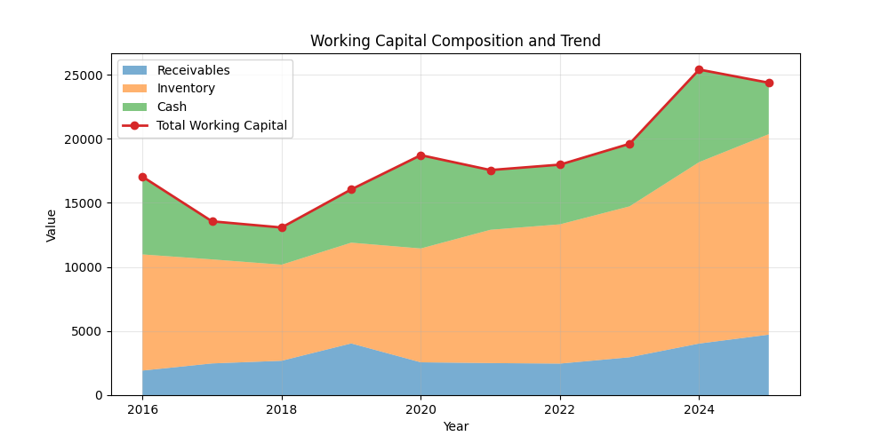
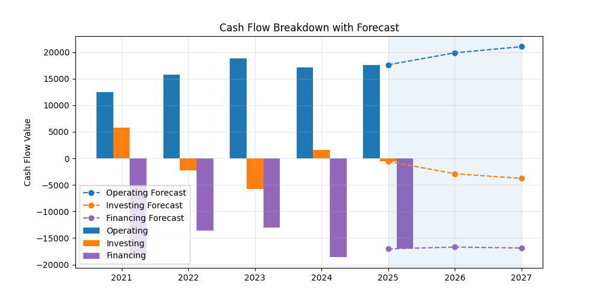
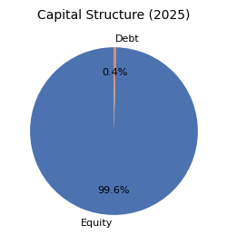
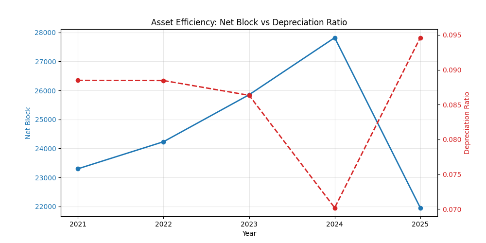

Working capital shows steady growth driven by inventory and receivables. Fluctuations indicate changes in operational efficiency and liquidity management.

Operating cash flow remains the primary contributor, while investing flows indicate capital allocation decisions. Variability in financing suggests changes in funding strategy.

The company is largely equity-funded with minimal reliance on debt, indicating a conservative financial structure and lower risk exposure.

Net Block shows growth until 2024 followed by a sharp decline in 2025, indicating possible asset disposal or restructuring. Depreciation trends suggest active utilization of assets.
Based on historical trends, operating cash flow is expected to remain stable with gradual growth. Investing cash flow may continue to fluctuate depending on capital expenditure decisions, while financing activity is likely to remain controlled.